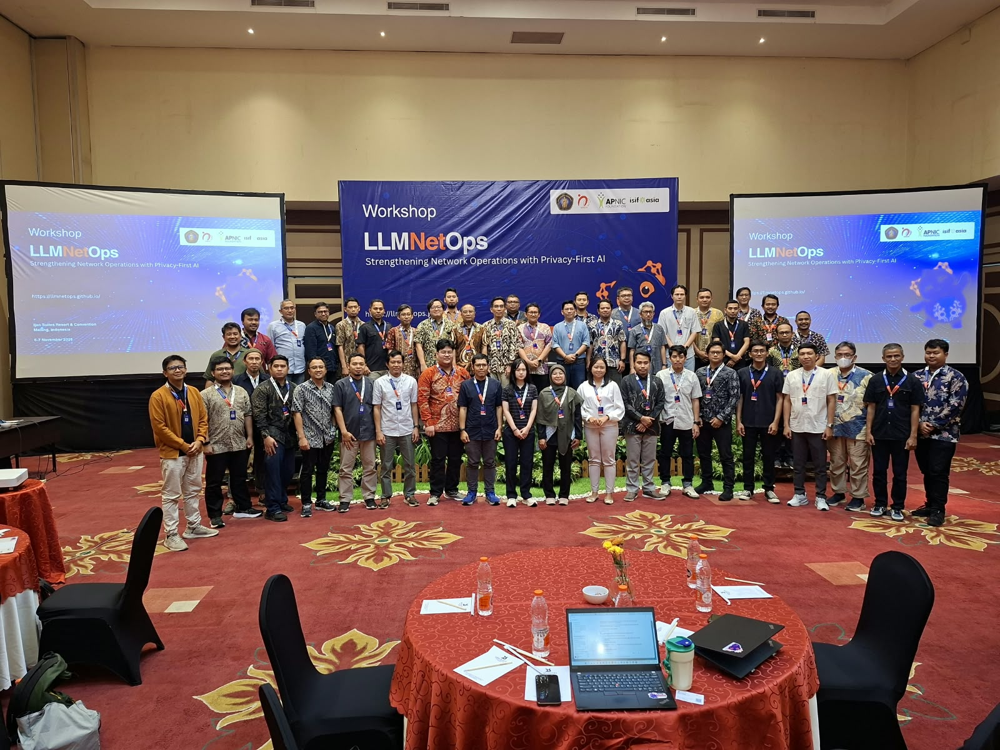
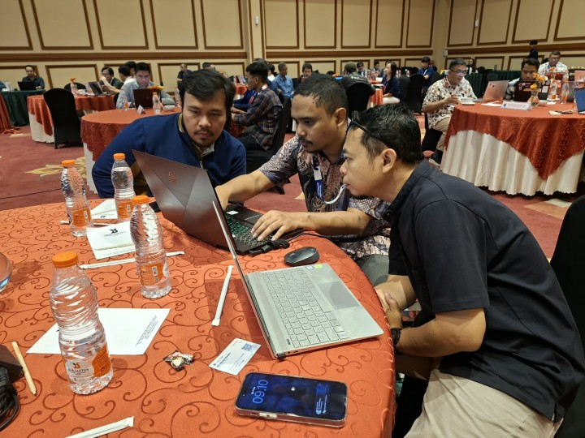

The LLMNetOps project team successfully held its Main Workshop Series at Hotel Ijen Suites, Malang, on November 6–7, 2026. The two-day event marked a major milestone in the project’s roadmap, bringing the full training program to 40 network administrators and technical staff from 24 universities and government institutions across Indonesia.
This workshop followed a pilot feedback phase conducted at three institutions, whose input shaped the final curriculum and system configuration used here.
Opening Ceremony
The workshop opened with remarks from representatives of the institutions and agencies that form the backbone of this initiative.
Dr. Achmad Basuki, Project Leader of LLMNetOps and lecturer at the Faculty of Computer Science, Universitas Brawijaya, opened the event by framing the core challenge the project was built to address: the growing gap between the complexity of campus network infrastructure and the capacity of teams managing it. He noted that generative AI, deployed locally and without sending data outside institutional networks, offers a practical path forward, and that this workshop represents the team’s commitment to making that path accessible to institutions across IDREN.
Dr. Didi Rustam, Head of SPBE Governance and Digital Transformation at the Data and Information Technology Center (Pusdatin), Ministry of Higher Education, Science, and Technology (Kemdiktisaintek), delivered remarks on behalf of the ministry. He highlighted the alignment between the LLMNetOps approach (privacy-preserving, institution-owned AI) and the ministry’s broader digital transformation agenda for the national higher education sector.
Dr. Widyawan, representing IDREN from Universitas Gadjah Mada, spoke to the community context of the project. As a member of the IDREN network, he articulated the practical value of LLMNetOps from the perspective of the institutions it is designed to serve, and expressed the network’s support for wider adoption of the system.
Prof. Andi Kurniawan, S.Pi., M.Eng., D.Sc., Vice Rector for Planning, Cooperation, and Internationalization of Universitas Brawijaya, welcomed participants on behalf of the university and affirmed UB’s commitment to translating research outcomes into practical capacity-building programs that benefit the national academic community.
Workshop Program
The two-day program was designed as a fully hands-on experience. Participants did not only receive instruction; they built and operated their own local AI systems throughout the event.
- Day 1 focused on problem framing and system setup. The team walked participants through the real-world challenges of campus network management and introduced the LLMNetOps architecture. By end of day, each participant had a working local AI system installed and running on their own laptop.
- Day 2 moved into applied practice. Participants used their configured systems to work through common network troubleshooting scenarios drawn from real campus environments. The day also included sessions on AI-based cybersecurity and broader generative AI applications for campus operations.
Participants
The workshop brought together 40 participants from 24 institutions, covering a wide geographic spread, from Java, Sumatra, and Kalimantan to Sulawesi and Maluku. Participating institutions included, among others:
Universitas Gadjah Mada, Universitas Indonesia, Institut Teknologi Bandung, Universitas Padjadjaran, Universitas Hasanuddin, Universitas Sebelas Maret, Universitas Pendidikan Indonesia, Universitas Negeri Semarang, Universitas Sam Ratulangi, Universitas Sriwijaya, Universitas Syiah Kuala, Universitas Tanjungpura, Universitas Mulawarman, Universitas Pattimura, UIN Maulana Malik Ibrahim Malang, UIN Ar-Raniry Banda Aceh, Pusdatin Kemdiktisaintek, Universitas Negeri Malang, Universitas Kristen Petra, Universitas Muhammadiyah Malang, Institut Teknologi Kalimantan, Universitas Borneo Tarakan, Politeknik Negeri Malang, and Institut Asia Malang.
Open Materials and Next Steps
All workshop materials, technical guides, and the LLMNetOps system itself are openly available under a free license. Participants leave with everything needed to deploy the system at their home institutions, including hands-on experience from the workshop itself.
The project team will follow up with an online workshop series to support and monitor implementation progress at each participating institution. Institutions with sufficient technical capacity are encouraged to move directly to production deployment. The open-license materials also support train-the-trainer replication, enabling participants to run similar sessions for their own staff.
LLMNetOps is funded by ISIF Asia/APNIC Foundation 2025 (USD 30,000) and implemented by Universitas Brawijaya in collaboration with IDREN. Full materials and documentation are available at llmnetops.github.io.



